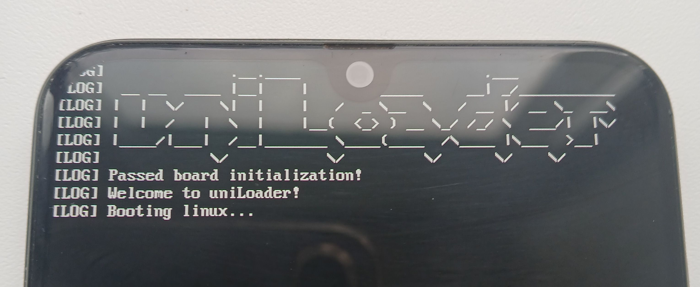

uniLoader (Русский)
|
 Пример загрузки uniLoader | |
| Название | uniLoader |
|---|---|
| Первый этап |
Unavailable
|
| Второй этап |
Works
|
| Ресурсы | исходный код |
{kind=link}
uniLoader — это вторичный загрузчик, способный загружать Linux на устройствах на базе Android и iOS. Такой загрузчик встраивает ramdisk, ядро и DTB в свой собственный бинарный образ (под названием uniLoader, который затем копируется в ОЗУ) и, наконец, после перемещения ядра передаёт ему управление.
Портирование
Используйте историю коммитов uniLoader в качестве примеров для портирования (например, вот этот). Как правило, вам потребуется отредактировать или создать следующие файлы:
- board/Kconfig
- board/Makefile
- board/<производитель>/board-<кодовое_название_устройства>.c
- configs/<кодовое_название_устройства>_defconfig
Пример board/Kconfig
config NOTHING_SPACEWAR
bool "Support for Nothing Phone (1)"
default n
depends on SM7325
help
Say Y if you want to include support for Nothing Phone (1)
Пример board/Makefile
lib-$(CONFIG_NOTHING_SPACEWAR) += nothing/board-spacewar.o
board/<производитель>/board-<кодовое_название_устройства>.c
// SPDX-License-Identifier: GPL-2.0
/*
* Copyright (c) 2026 Ryo "evilMyQueen" Yamada <evilMyQueen@mainlining.org>
*/
#include <board.h>
#include <util.h>
#include <drivers/framework.h>
#include <lib/simplefb.h>
static struct video_info spacewar_fb = {
.format = FB_FORMAT_ARGB8888,
.width = 1080,
.height = 2400,
.stride = 4,
.scale = 2,
.address = (void *)0xe1000000
};
static const struct device spacewar_devices[] = {
{ "simplefb", &spacewar_fb, "fb" },
};
struct board_data board_ops = {
.name = "nothing-spacewar",
.ops = {
},
.devices = spacewar_devices,
.num_devices = ARRAY_SIZE(spacewar_devices),
.quirks = 0
};
Пример configs/<кодовое_название_устройства>_defconfig
CONFIG_POSITION_INDEPENDENT=y
CONFIG_LINUX_KRNL_HEADER_IMG=y
CONFIG_SM7325=y
CONFIG_NOTHING_SPACEWAR=y
CONFIG_TEXT_BASE=0x83600000
CONFIG_RAMDISK_ENTRY=0xadb6c000
CONFIG_PAYLOAD_ENTRY=0xc5100000Нахождение базового адреса
Найдите базовый адрес — то есть адрес в ОЗУ, по которому штатный загрузчик загружает Linux (или uniLoader).
Как его найти:
- Посмотрите логи загрузчика (например,
Booting Linux at 0xf00ba0).
- Используйте этот метод со страницы «U‑Boot porting».
Вам потребуется загрузить устройство несколько раз и проверить, остаётся ли адрес неизменным или меняется между загрузками. Эта информация понадобится для дальнейших действий.
Опции defconfig
CONFIG_POSITION_INDEPENDENT
Установка значения =y сообщает uniLoader, что его базовый адрес может меняться между загрузками. Технически это заставляет бинарный файл uniLoader использовать позиционно‑независимый код (PIC). Кроме того, это заставляет uniLoader во время выполнения копировать себя в область, заданную в CONFIG_TEXT_BASE. Используйте =y, если базовый адрес меняется между загрузками. Если он не меняется, можно использовать =n, хотя =y тоже может работать — при условии, что остальные опции заданы корректно.
CONFIG_TEXT_BASE
Начальный адрес uniLoader в ОЗУ.
Как вычислить (не PIC):
- Используйте ваш базовый адрес без изменений.
Как вычислить (PIC):
- Выберите произвольный незарезервированный адрес в памяти (проверьте
/proc/iomemв работающей системе с downstream-ядром), где достаточно места для размещения бинарного файла uniLoader.
CONFIG_PAYLOAD_ENTRY
Адрес в памяти, куда загружается ядро Linux. После завершения работы uniLoader этот адрес становится новым базовым адресом.
Как вычислить:
- Выберите произвольный незарезервированный адрес в памяти (проверьте
/proc/iomemв работающей системе с downstream-ядром), где достаточно места для размещения ядра Linux.
CONFIG_RAMDISK_ENTRY
Адрес в памяти, куда загружается ramdisk.
Как вычислить:
- Возьмите значение свойства
linux,initrd-startиз downstream-DTS.
- Выберите произвольный незарезервированный адрес в памяти (проверьте
/proc/iomemв работающей системе с downstream-ядром), в котором достаточно места для размещения ramdisk.
CONFIG_LINUX_KRNL_HEADER_IMG
Добавляет заголовок ядра Linux к исполняемому файлу uniLoader. Заставляет ваш загрузчик думать, что он имеет дело с ядром Linux, а не с произвольным бинарным файлом.
Сборка образа uniLoader
Установите кросс-компилятор
Debian/Ubuntu/Linux Mint:
# apt install aarch64-linux-gnu
Fedora:
# dnf install gcc-aarch64-linux-gnu
Arch Linux:
# pacman -S aarch64-linux-gnu-gcc
Клонируйте репозиторий и перейдите в его директорию
$ git clone https://github.com/ivoszbg/uniLoader
$ cd uniLoader
Подготовьте нужные файлы
Скопируйте образ ядра, DTB, и ramdisk в директорию blob:
$ cp $HOME/$USER/linux/arch/arm64/boot/Image blob/Image
$ cp $HOME/$USER/linux/arch/arm64/boot/dts/<чипсет>/<модель_чипсета>-<кодовое_название_устройства>.dtb blob/dtb
$ cp $HOME/$USER/ramdisk.gz blob/ramdisk
Запустите сборку
$ make ARCH=aarch64 CROSS_COMPILE=aarch64-linux-gnu- <кодовое_название_устройства>_defconfig
$ make ARCH=aarch64 CROSS_COMPILE=aarch64-linux-gnu-
Запаковка в boot.img
Выполните эту команду на штатном boot.img, чтобы получить пример вывода mkbootimg:
$ unpack_bootimg --boot_img boot.img --out unpack --format=mkbootimg
Пример вывода:
--header_version 1 --kernel unpack/kernel --ramdisk unpack/ramdisk --pagesize 0x00000800 --base 0x00000000 --kernel_offset 0x10008000 --ramdisk_offset 0x00000000 --second_offset 0x00000000 --tags_offset 0x10000100 --cmdline 'androidboot.selinux=permissive'
Теперь замените значение, передаваемое аргументу --kernel, на uniLoader или uniLoader.gz. Добавьте аргумент --out вместе с желаемым именем выходного образа. Используйте полученный результат с mkbootimg:
$ mkbootimg --header_version 1 --kernel uniLoader --ramdisk unpack/ramdisk --pagesize 0x00000800 --base 0x00000000 --kernel_offset 0x10008000 --ramdisk_offset 0x00000000 --second_offset 0x00000000 --tags_offset 0x10000100 --cmdline 'androidboot.selinux=permissive' --out boot-uniLoader.img
Если есть ограничения по объёму, вместо использования штатного ramdisk создайте пустой:
$ touch empty_ramdisk
$ # используйте через --ramdisk empty_ramdisk
uniLoader или uniLoader.gz?
Выбирайте вариант в соответствии с методом сжатия в штатном boot.img. Проверить его можно по распакованному ядру с помощью команды ниже:
$ file unpack/kernel
Пример вывода, когда следует использовать uniLoader:
unpack/kernel: Linux kernel ARM64 boot executable Image, little-endian, 4K pages
Пример вывода, когда следует использовать uniLoader.gz:
unpack/kernel: gzip compressed data, max compression, from Unix, original size modulo 2^32 7630437
Даже если в mkbootimg вы передаёте сжатый образ ядра, в директории uniLoader/blob всегда должен находиться несжатый образ.